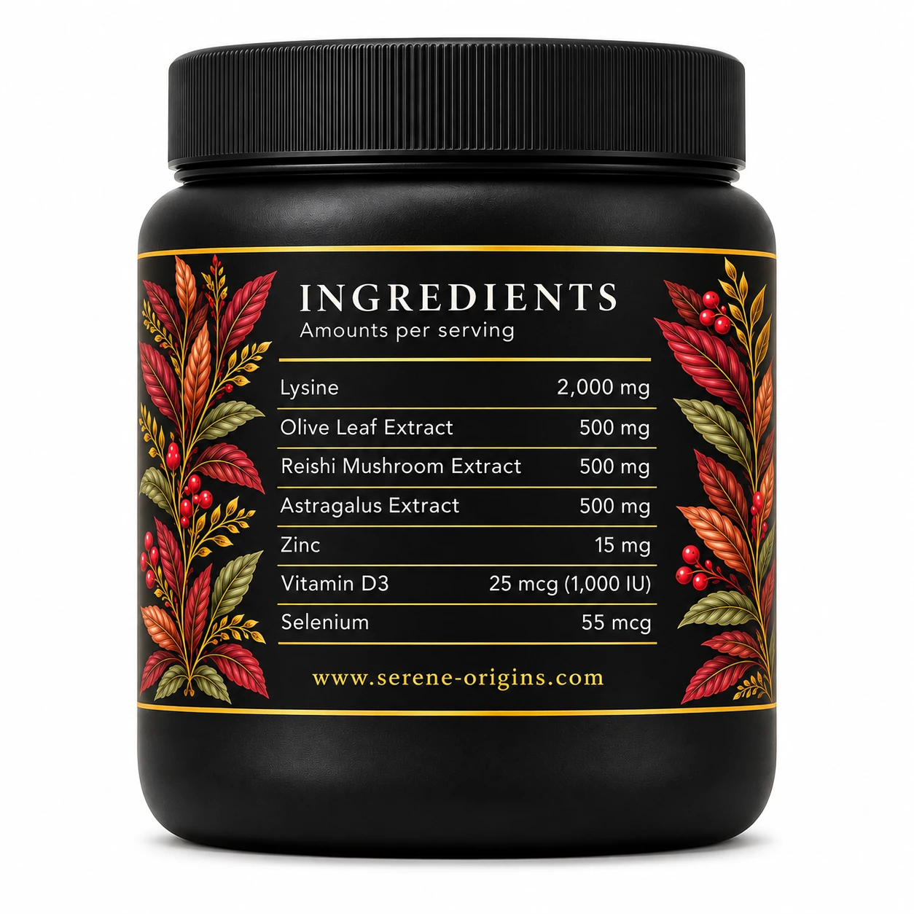

ROOTED IN NATURE. SUPPORTING YOU DAILY.
A closer look.
A clearer choice.
Seven ingredients, brought together in one jar.
Take a moment to get to know each one.
 Nature in the story. Clarity in the details.
Nature in the story. Clarity in the details.KNOW WHAT’S INSIDE
Seven ingredients.
One considered blend.

Our label, in full view.
THE COMPLETE PICTURE
Nothing hidden.
Every amount, here.
The full ingredient list, with amounts per serving. Select an ingredient to read more.
Explore the ingredient guideIngredient research does not establish the effects of this finished blend. Botanical images illustrate ingredient identity; they do not document the extract’s source or manufacturing process.
BROUGHT TOGETHER, THOUGHTFULLY
One jar.
A simpler starting point.
Ingredients in one blend
Lysine, three extracts, vitamin D3, zinc, and selenium, with each amount clearly listed.
One formula to explore
Get to know the ingredients together, with information you can revisit at your own pace.
Room for your questions
Good information should make your next question easier to ask. Clarity is part of the experience.
ROOTED IN NATURE. SUPPORTING YOU DAILY.
A thoughtful beginning.
We’re preparing our first release. Availability notifications will open with the new website.
Discover the jarBack to the beginning